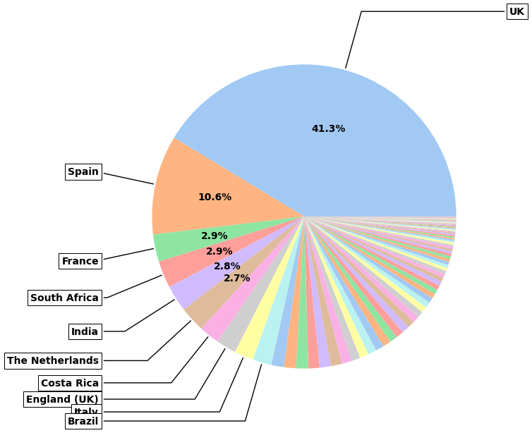

Pesticide: Summary of the data
Contents
Pesticide: Summary of the data#
Summary plots and tables
Imports#
This bit imports any libraries included in the following including those from Pesticide to handle the data.
The first cell import general libraries and sets the folder to allow importing Pesticide which is done in the second cell
import pandas as pd
from pandasql import sqldf
import numpy as np
import seaborn as sns
import matplotlib.pyplot as plt
import os
from pathlib import Path
import sys
# this sets the path for Pesticide so we can import the functions
# N.B. PesticideDocs and Pesticide need to be in same folder
# tried to load from github using https://pypi.org/project/httpimport/ but
# couldn't get to work due to modular structure i.e. how to access src/plotfuncts/plot1.py greatplot
module_path = Path( os.getcwd() )
module_path = module_path.parent.__str__() + '\\Pesticide'
sys.path.insert(0, module_path)
from src.data_loading.loads_from_url import *
from src.data_cleaning.modify_dfs import *
from src.data_visualisation.plot_funcs import *
from src.utils.utils import *
cwd = module_path
folder_path = os.path.join(cwd,'data')
create_csvs=False
if create_csvs:
getAllFilesThenSave(folder_path)
Summaries of the data#
The data is loaded then rows near the beginning and end are shown below
After this df.describe() and df.info() are used to get more info on the dataframe.
df2 = pd.read_csv(os.path.join(folder_path,'combined_data.csv') ,index_col=0 )
# change data type of columns
df2['date_of_sampling'] = pd.to_datetime(df2['date_of_sampling'])
df2
| sample_id | date_of_sampling | description | country_of_origin | retail_outlet | address | brand_name | packer_/_manufacturer_/_importer | pesticide_residues_found_in_mg/kg_(mrl) | product | address_postcode | packer__postcode | chem_name | amount_detected | mrl | amount_pc | |
|---|---|---|---|---|---|---|---|---|---|---|---|---|---|---|---|---|
| 0 | 1958/2016 | 2016-08-08 | Bramley Apples | UK | Asda | Creechbarrow Road, Taunton TA1 2AN | Asda | Asda Stores Ltd Leeds, UK LS11 5AD | boscalid 0.03 (MRL = 2) | Apple | TA1 2AN | LS11 5AD | boscalid | 0.03 | 2.0 | 0.015000 |
| 1 | 1958/2016 | 2016-08-08 | Bramley Apples | UK | Asda | Creechbarrow Road, Taunton TA1 2AN | Asda | Asda Stores Ltd Leeds, UK LS11 5AD | pyraclostrobin 0.01 (MRL = 0.5) | Apple | TA1 2AN | LS11 5AD | pyraclostrobin | 0.01 | 0.5 | 0.020000 |
| 2 | 0230/2016 | 2016-08-08 | Bramley Apples | UK | Co-op | Northgate, Louth LN11 0LT | Co-op | Co-operative Group Ltd Manchester M60 0AG | boscalid 0.05 (MRL = 2) | Apple | LN11 0LT | M60 0AG | boscalid | 0.05 | 2.0 | 0.025000 |
| 3 | 0230/2016 | 2016-08-08 | Bramley Apples | UK | Co-op | Northgate, Louth LN11 0LT | Co-op | Co-operative Group Ltd Manchester M60 0AG | flonicamid (sum) 0.02 (MRL = 0.2) | Apple | LN11 0LT | M60 0AG | flonicamid (sum) | 0.02 | 0.2 | 0.100000 |
| 4 | 0230/2016 | 2016-08-08 | Bramley Apples | UK | Co-op | Northgate, Louth LN11 0LT | Co-op | Co-operative Group Ltd Manchester M60 0AG | pyraclostrobin 0.03 (MRL = 0.5) | Apple | LN11 0LT | M60 0AG | pyraclostrobin | 0.03 | 0.5 | 0.060000 |
| ... | ... | ... | ... | ... | ... | ... | ... | ... | ... | ... | ... | ... | ... | ... | ... | ... |
| 23947 | 0792/2022 | 2022-09-08 | Marfona Unwashed Potatoes | UK | Stoke Fruit Farm | 77 Havant Road, Hayling Island, Hampshire PO11... | None stated | Stoke Fruit Farm 77 Havant Road, Hayling Islan... | maleic hydrazide 7.7 (MRL = 60) | Potatoes_(GB) | PO11 0PT | PO11 0PT | maleic hydrazide | 7.70 | 60.0 | 0.128333 |
| 23948 | 0765/2022 | 2022-09-14 | Sagitta Potatoes | UK | Total Produce Ltd. | Callywith Gate Industrial Estate, Launceston R... | None stated | CS Duston & Son Colwith Farm, Par, Cornwall | maleic hydrazide 17 (MRL = 60) | Potatoes_(GB) | PL31 2RQ | 0 | maleic hydrazide | 17.00 | 60.0 | 0.283333 |
| 23949 | 0938/2022 | 2022-09-01 | Marfona Ware Potatoes | UK | Tulipland Potatoes Ltd | Fengate, Moulton Chapel PE12 0XL | None stated | Garden of Elveden | NaN | Potatoes_(GB) | PE12 0XL | 0 | 0 | 0.00 | 0.0 | 0.000000 |
| 23950 | 0833/2022 | 2022-08-31 | Lady Rosetta | England (UK) | Tyrrells Crisps | Tyrrells Court, Stretford Bridge, Leominster H... | None stated | KP Crisps | NaN | Potatoes_(GB) | HR6 9DQ | 0 | 0 | 0.00 | 0.0 | 0.000000 |
| 23951 | 0833/2022 | 2022-08-31 | Lady Rosetta | England (UK) | Tyrrells Crisps | Tyrrells Court, Stretford Bridge, Leominster H... | None stated | KP Crisps | NaN | Potatoes_(GB) | HR6 9DQ | 0 | 0 | 0.00 | 0.0 | 0.000000 |
23952 rows × 16 columns
df2.to_csv('./_data/df2')
df2.describe(include='all', datetime_is_numeric=True)
| sample_id | date_of_sampling | description | country_of_origin | retail_outlet | address | brand_name | packer_/_manufacturer_/_importer | pesticide_residues_found_in_mg/kg_(mrl) | product | address_postcode | packer__postcode | chem_name | amount_detected | mrl | amount_pc | |
|---|---|---|---|---|---|---|---|---|---|---|---|---|---|---|---|---|
| count | 23952 | 23952 | 23952 | 23952 | 23898 | 23898 | 23898 | 23896 | 16576 | 23952 | 23952 | 23952 | 23952 | 23952.000000 | 23952.000000 | 23952.000000 |
| unique | 10732 | NaN | 4254 | 121 | 1140 | 4380 | 831 | 3341 | 4260 | 131 | 1638 | 821 | 186 | NaN | NaN | NaN |
| top | 2430/2018 | NaN | Conference Pears | UK | Tesco | Albert Row, Oystermouth Road, Swansea SA1 3RA | None stated | Tesco Stores Ltd Welwyn Garden City AL7 1GA | chlormequat 0.03 (MRL = 0.6) | Grapes | UB2 5XJ | 0 | 0 | NaN | NaN | NaN |
| freq | 42 | NaN | 614 | 8006 | 3549 | 140 | 6617 | 2086 | 88 | 1667 | 343 | 9546 | 8831 | NaN | NaN | NaN |
| mean | NaN | 2017-10-15 21:31:26.573146112 | NaN | NaN | NaN | NaN | NaN | NaN | NaN | NaN | NaN | NaN | NaN | 0.231456 | 2.694487 | 0.213602 |
| min | NaN | 2016-01-18 00:00:00 | NaN | NaN | NaN | NaN | NaN | NaN | NaN | NaN | NaN | NaN | NaN | 0.000000 | 0.000000 | 0.000000 |
| 25% | NaN | 2016-11-30 00:00:00 | NaN | NaN | NaN | NaN | NaN | NaN | NaN | NaN | NaN | NaN | NaN | 0.000000 | 0.000000 | 0.000000 |
| 50% | NaN | 2017-11-28 00:00:00 | NaN | NaN | NaN | NaN | NaN | NaN | NaN | NaN | NaN | NaN | NaN | 0.020000 | 0.500000 | 0.012000 |
| 75% | NaN | 2018-07-16 00:00:00 | NaN | NaN | NaN | NaN | NaN | NaN | NaN | NaN | NaN | NaN | NaN | 0.080000 | 3.000000 | 0.066667 |
| max | NaN | 2022-09-21 00:00:00 | NaN | NaN | NaN | NaN | NaN | NaN | NaN | NaN | NaN | NaN | NaN | 48.000000 | 182.000000 | 240.000000 |
| std | NaN | NaN | NaN | NaN | NaN | NaN | NaN | NaN | NaN | NaN | NaN | NaN | NaN | 1.118951 | 6.792256 | 2.942220 |
Modify functions#
df2_grouped, df2_grouped_sample = groupby_id_and_q(df2)
df2_grouped
| country_of_origin | amount_detected | mrl | amount_pc | number_of_tests | |
|---|---|---|---|---|---|
| 0 | UK | 0.195679 | 1.548986 | 0.155359 | 4698 |
| 1 | Spain | 0.146144 | 3.146354 | 0.293926 | 988 |
| 2 | England (UK) | 0.405924 | 3.488212 | 0.048455 | 397 |
| 3 | South Africa | 0.324500 | 3.499751 | 0.098734 | 376 |
| 4 | Italy | 0.124684 | 1.740408 | 0.625776 | 364 |
| ... | ... | ... | ... | ... | ... |
| 116 | St Lucia | 1.500000 | 2.000000 | 0.750000 | 1 |
| 117 | Macedonia | 0.132857 | 2.571429 | 0.051429 | 1 |
| 118 | South West Atlantic | 0.000000 | 0.000000 | 0.000000 | 1 |
| 119 | Russia | 0.000000 | 0.000000 | 0.000000 | 1 |
| 120 | Aegean Sea | 0.000000 | 0.000000 | 0.000000 | 1 |
121 rows × 5 columns
df2_grouped_sample.dtypes
sample_id object
date_of_sampling datetime64[ns]
country_of_origin object
amount_detected float64
mrl float64
amount_pc float64
dtype: object
Plot functions#
range_plots(df2);
range_plots(df2,plot_type='hist');


pie_plot(df2_grouped,col_groupby='country_of_origin' , col_plot='amount_detected');
pie_plot(df2_grouped,col_groupby='country_of_origin' , col_plot='number_of_tests');
pie_plot(df2_grouped,col_groupby='country_of_origin' , col_plot='amount_pc');


Changes with time#
df2
| sample_id | date_of_sampling | description | country_of_origin | retail_outlet | address | brand_name | packer_/_manufacturer_/_importer | pesticide_residues_found_in_mg/kg_(mrl) | product | address_postcode | packer__postcode | chem_name | amount_detected | mrl | amount_pc | |
|---|---|---|---|---|---|---|---|---|---|---|---|---|---|---|---|---|
| 0 | 1958/2016 | 2016-08-08 | Bramley Apples | UK | Asda | Creechbarrow Road, Taunton TA1 2AN | Asda | Asda Stores Ltd Leeds, UK LS11 5AD | boscalid 0.03 (MRL = 2) | Apple | TA1 2AN | LS11 5AD | boscalid | 0.03 | 2.0 | 0.015000 |
| 1 | 1958/2016 | 2016-08-08 | Bramley Apples | UK | Asda | Creechbarrow Road, Taunton TA1 2AN | Asda | Asda Stores Ltd Leeds, UK LS11 5AD | pyraclostrobin 0.01 (MRL = 0.5) | Apple | TA1 2AN | LS11 5AD | pyraclostrobin | 0.01 | 0.5 | 0.020000 |
| 2 | 0230/2016 | 2016-08-08 | Bramley Apples | UK | Co-op | Northgate, Louth LN11 0LT | Co-op | Co-operative Group Ltd Manchester M60 0AG | boscalid 0.05 (MRL = 2) | Apple | LN11 0LT | M60 0AG | boscalid | 0.05 | 2.0 | 0.025000 |
| 3 | 0230/2016 | 2016-08-08 | Bramley Apples | UK | Co-op | Northgate, Louth LN11 0LT | Co-op | Co-operative Group Ltd Manchester M60 0AG | flonicamid (sum) 0.02 (MRL = 0.2) | Apple | LN11 0LT | M60 0AG | flonicamid (sum) | 0.02 | 0.2 | 0.100000 |
| 4 | 0230/2016 | 2016-08-08 | Bramley Apples | UK | Co-op | Northgate, Louth LN11 0LT | Co-op | Co-operative Group Ltd Manchester M60 0AG | pyraclostrobin 0.03 (MRL = 0.5) | Apple | LN11 0LT | M60 0AG | pyraclostrobin | 0.03 | 0.5 | 0.060000 |
| ... | ... | ... | ... | ... | ... | ... | ... | ... | ... | ... | ... | ... | ... | ... | ... | ... |
| 23947 | 0792/2022 | 2022-09-08 | Marfona Unwashed Potatoes | UK | Stoke Fruit Farm | 77 Havant Road, Hayling Island, Hampshire PO11... | None stated | Stoke Fruit Farm 77 Havant Road, Hayling Islan... | maleic hydrazide 7.7 (MRL = 60) | Potatoes_(GB) | PO11 0PT | PO11 0PT | maleic hydrazide | 7.70 | 60.0 | 0.128333 |
| 23948 | 0765/2022 | 2022-09-14 | Sagitta Potatoes | UK | Total Produce Ltd. | Callywith Gate Industrial Estate, Launceston R... | None stated | CS Duston & Son Colwith Farm, Par, Cornwall | maleic hydrazide 17 (MRL = 60) | Potatoes_(GB) | PL31 2RQ | 0 | maleic hydrazide | 17.00 | 60.0 | 0.283333 |
| 23949 | 0938/2022 | 2022-09-01 | Marfona Ware Potatoes | UK | Tulipland Potatoes Ltd | Fengate, Moulton Chapel PE12 0XL | None stated | Garden of Elveden | NaN | Potatoes_(GB) | PE12 0XL | 0 | 0 | 0.00 | 0.0 | 0.000000 |
| 23950 | 0833/2022 | 2022-08-31 | Lady Rosetta | England (UK) | Tyrrells Crisps | Tyrrells Court, Stretford Bridge, Leominster H... | None stated | KP Crisps | NaN | Potatoes_(GB) | HR6 9DQ | 0 | 0 | 0.00 | 0.0 | 0.000000 |
| 23951 | 0833/2022 | 2022-08-31 | Lady Rosetta | England (UK) | Tyrrells Crisps | Tyrrells Court, Stretford Bridge, Leominster H... | None stated | KP Crisps | NaN | Potatoes_(GB) | HR6 9DQ | 0 | 0 | 0.00 | 0.0 | 0.000000 |
23952 rows × 16 columns
# Return a named tuple object with three components: year, week and weekday
# https://docs.python.org/3/library/datetime.html#datetime.date.isocalendar
def get_week(x):
return x.isocalendar()[1]
xx=df2_grouped_sample.copy()
xx['week'] = df2_grouped_sample['date_of_sampling'].apply(get_week)
xx['day'] = pd.DatetimeIndex(xx['date_of_sampling']).day
xx['month'] = pd.DatetimeIndex(xx['date_of_sampling']).month
xx['quarter'] = pd.DatetimeIndex(xx['date_of_sampling']).quarter
xx['year'] = pd.DatetimeIndex(xx['date_of_sampling']).year
xx2 = xx.groupby(['year','month','week'], as_index=False).mean(numeric_only=True)
xx2['date_grouped']=pd.to_datetime(
{"year": xx2['year'], "month": xx2['month'], "day": xx2['day']}
)
xx2
plt.plot(xx2['date_grouped'], xx2['amount_pc'],'ok')
xx2 = xx.groupby(['year','quarter'], as_index=False).mean(numeric_only=True)
xx2['month'] = xx2['month'].astype('int')
xx2['day'] = 1
xx2['date_grouped']=pd.to_datetime(
{"year": xx2['year'], "month": xx2['month'], "day": xx2['day']}
)
plt.plot(xx2['date_grouped'], xx2['amount_pc'],'b--');
